01
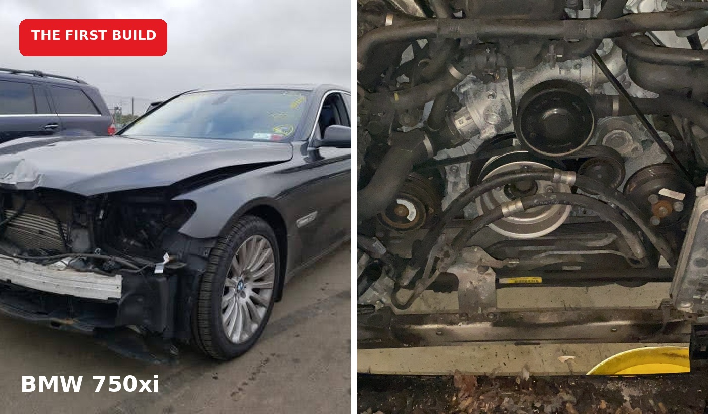
WHERE IT STARTED
BMW 750xi — The First Build
The first major Projects & Problems rebuild: a damaged BMW 7 Series that started the hands-on salvage-build journey.
SEE THE FIRST BUILD →BMW, Porsche and whatever project comes next — real rebuilds, repairs, upgrades and the problems that happen along the way.
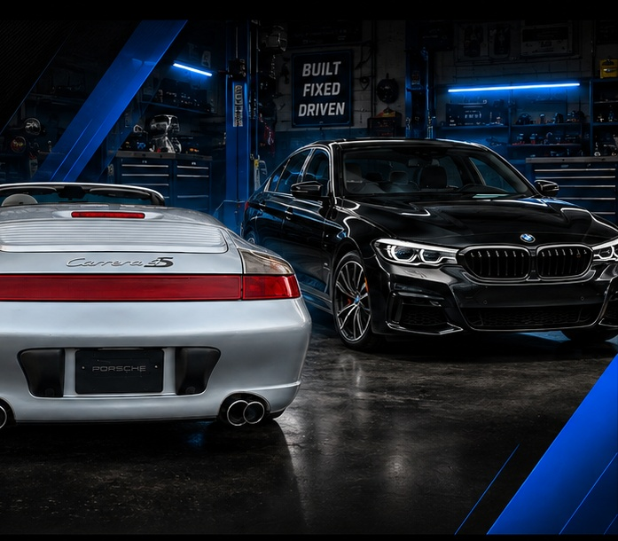
Projects & Problems started because I needed a project.
After COVID, I wanted something I could build in my own garage that would keep me busy and bring me some joy. That turned into buying salvage cars, rebuilding them myself and documenting what actually happens along the way.
I’m not working with an unlimited budget or a professional shop. Most of these builds are DIY, done in my garage, on a real-person budget.
That’s where the name comes from: the projects — and the problems that come with them.
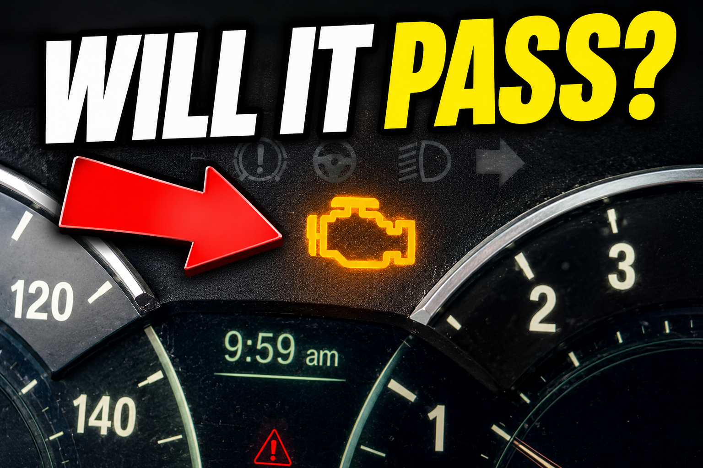
The 530i heads to salvage inspection on a flatbed with a check-engine light on. Then comes the rebuilt title, registration, professional detail and the payoff.

The first major Projects & Problems rebuild: a damaged BMW 7 Series that started the hands-on salvage-build journey.
SEE THE FIRST BUILD →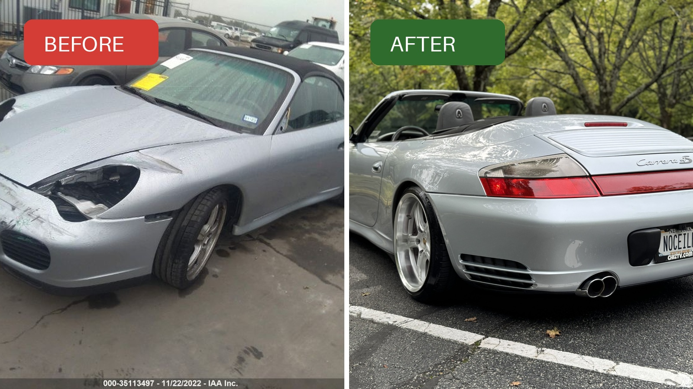
A damaged 996 Carrera 4S brought back through repairs, replacement parts, troubleshooting and ongoing ownership.
SEE THE PORSCHE STORY →
From salvage purchase to inspection, rebuilt title, registration, detailing and the final cosmetic work still underway.
WATCH THE CURRENT BUILD →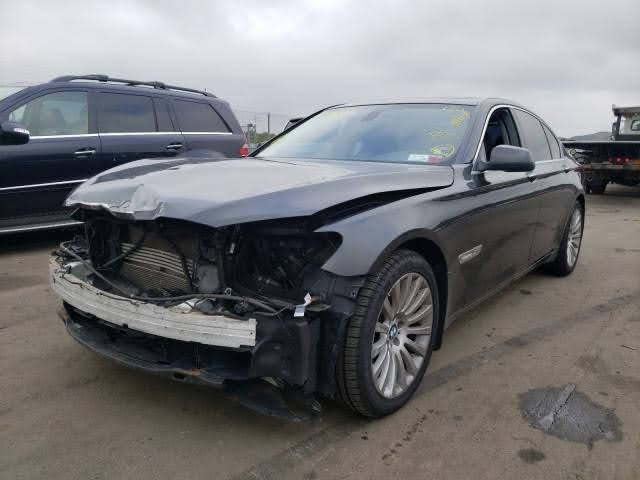
The 7 Series arrived with significant front-end damage, but the rest of the car showed why it was worth taking on: a complete luxury interior, a strong platform and a project with plenty to figure out.
This became the template for Projects & Problems — documenting the condition, diagnosing what was actually damaged, repairing it piece by piece and learning along the way.
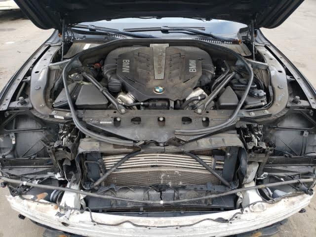
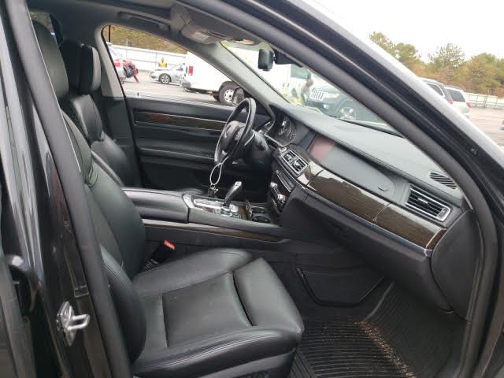
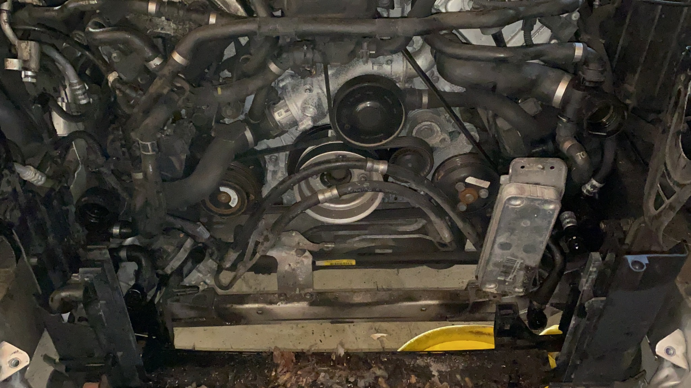
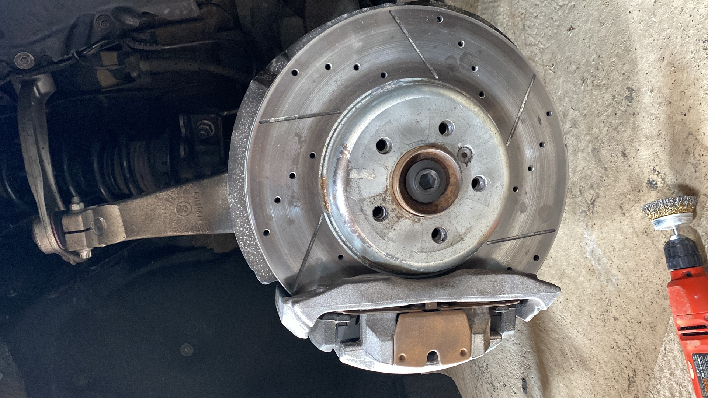
The 2018 BMW 530i started as a damaged auction car and became a registered, road-ready project through hands-on repairs, inspection and finishing work.
The Porsche project has its own history of damage, repairs and upgrades — exactly the kind of real-world work Projects & Problems is built around.
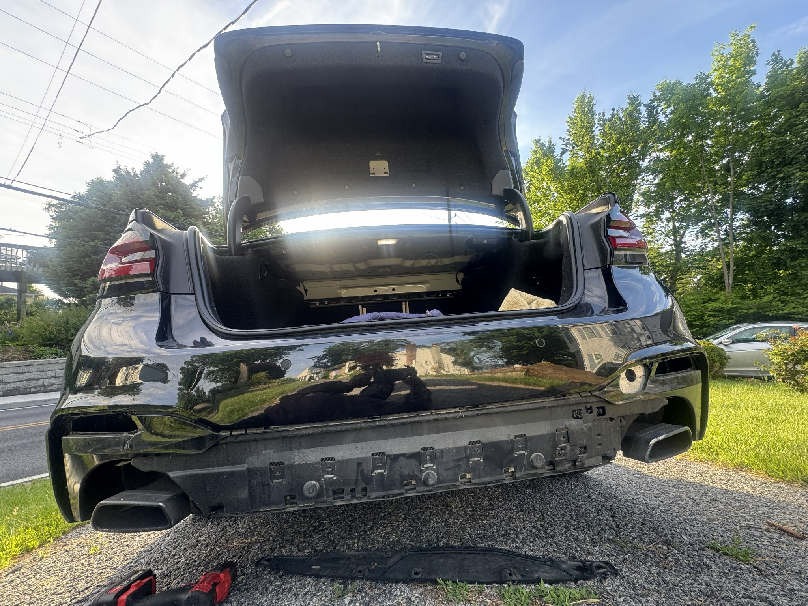
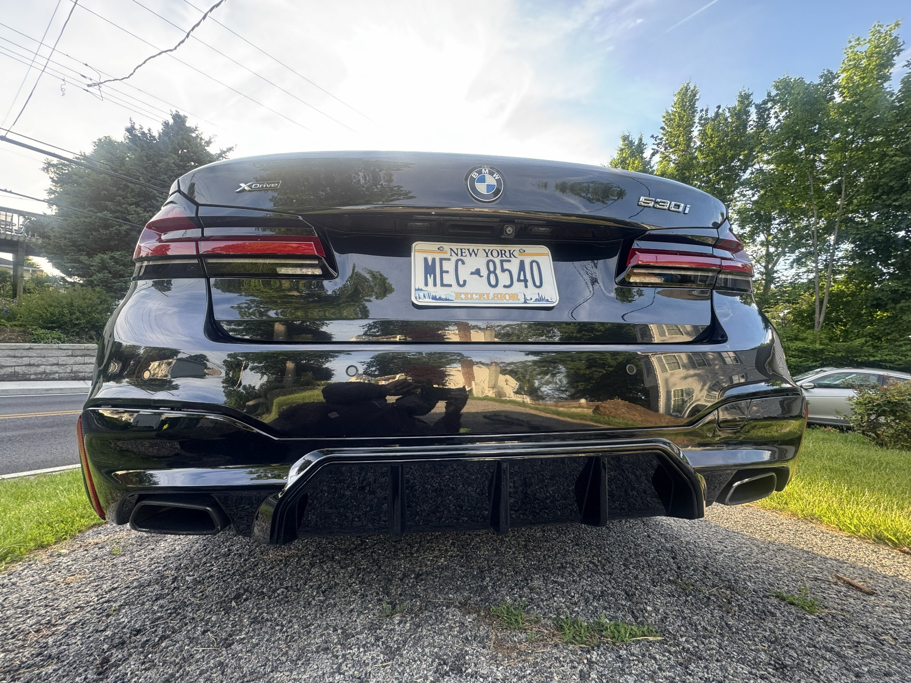
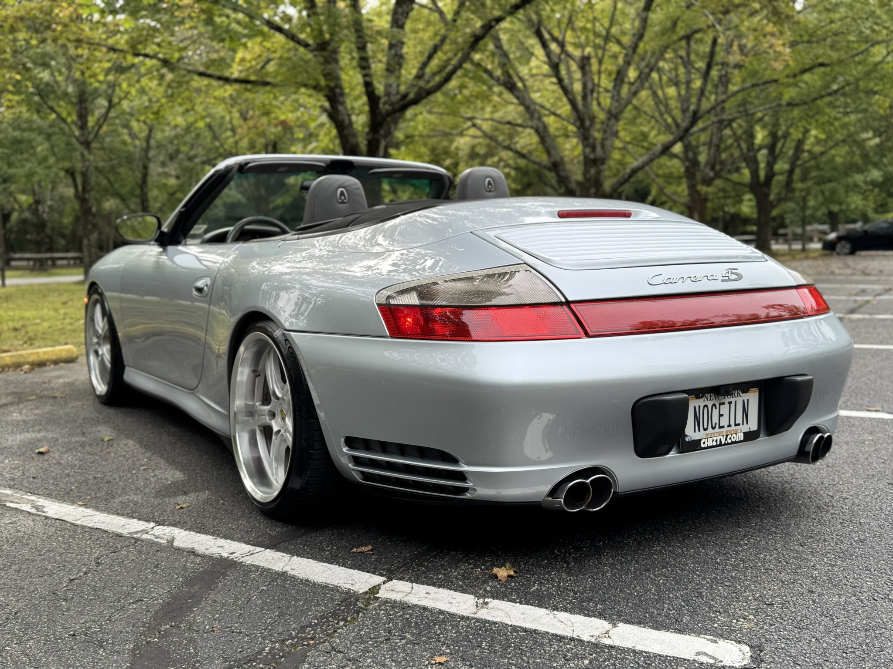
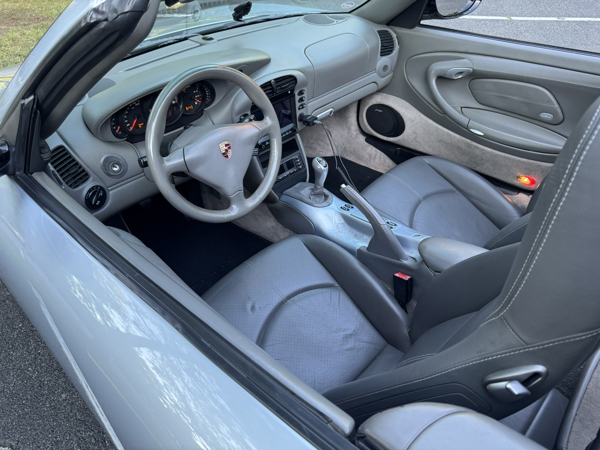
The 996 arrived with front-end damage, missing lighting and interior pieces removed. The gallery below documents the actual auction condition and what came with the car.
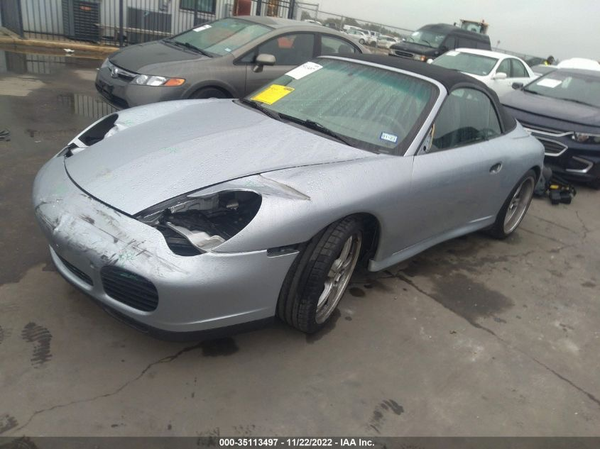
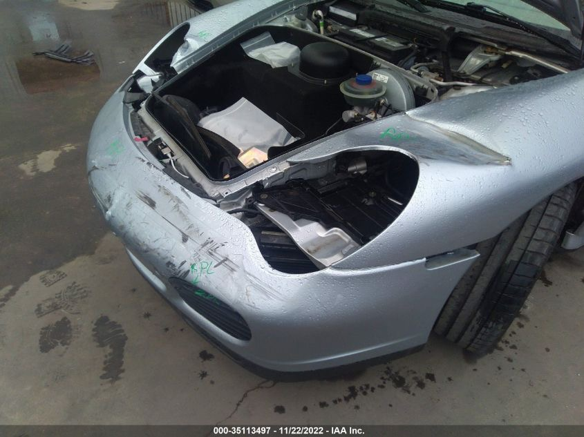
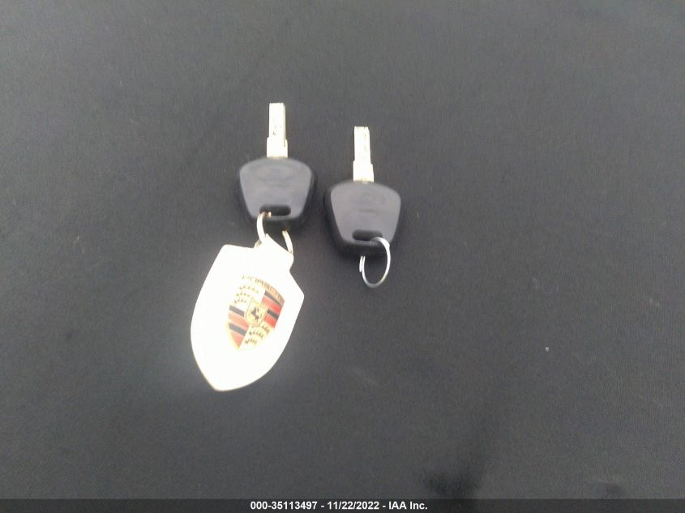
A future home for tools I use, parts, car-care products, affiliate recommendations and P&P merchandise.
Garage tools and equipment tested on actual projects.
Useful parts, upgrades and project-car accessories.
Detailing and maintenance products worth recommending.
Projects & Problems apparel and garage gear.
Projects & Problems is about what really happens when you own, repair and rebuild cars yourself — including the mistakes, delays, surprises and wins.
The channel follows hands-on automotive DIY, project-car ownership, diagnostics, repairs, detailing and the decisions that come with keeping older and rebuilt cars on the road.
Because every build has both.